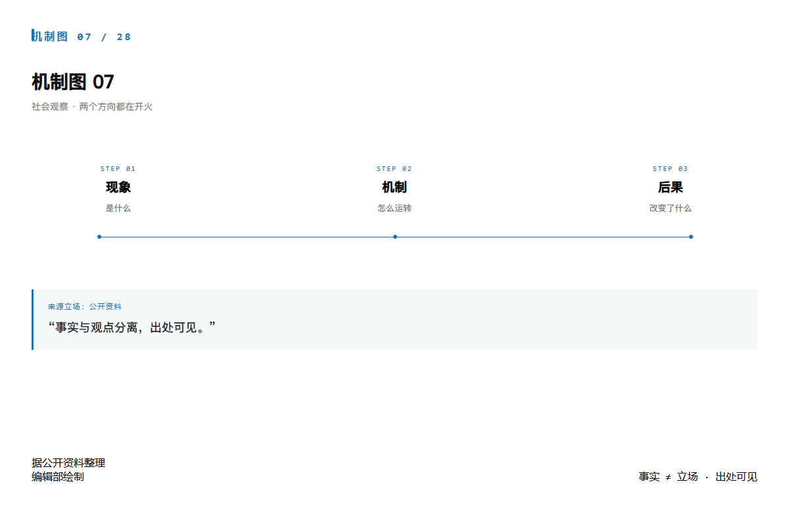

扫射不看脸，只看标签
社会观察 · 两个方向都在开火
「男的都这样。」「女的都那样。」两句话出现在同一条帖子下，谁都没提任何一个具体的人。
扫射原话不逐条转述，也不核实真假。下面的判断来自公共语料里的标签化句式观察，和伤害如何外溢的结构归纳：引文照抄网络惯用表达，不指向具体事件或群体。写它不为分谁对谁错，只为把误伤的形状看清楚。
但这事和今天的你，有关系。你大概率不参与对轰，却带着某个标签在生活。别人的战役打完，账单会寄到你这里。
对轰的火力有一个特点：按标签，不按个体。男性标签、女性标签、地域、职业，一枚导弹覆盖几十万人。绝大多数人不参与对轰，只是带着这个标签过日子，却要在评论区、相亲市场、职场语境里反复中弹。他们既没上场，也没还手的机会。
「男的都这样」「女的都这样」的扫射里，躺着的全是没上场的人。标签在这里的作用不是描述，是打包：把千差万别的个体压成一个可攻击的靶面。你越想解释「我不是这样」，越像在替整个标签辩护，于是干脆不说了。
在性别对轰里，男性标签承受的扫射常见形态是「男的都家暴」「男人没一个好东西」。这些句子把一个群体整体定性，具体的人无论怎么做都要先自证例外。注意：这里引的是标签句式，不是对任何指控的判断；个案的是非不在讨论范围。
被扫中的普通男性，往往没有参与任何争论。他只是在相亲时被多看一眼，在职场里被多问一句，在家庭群里被一句玩笑钉住。伤害不剧烈，但持续，而且很难举证，因为没有人真的指着他说了那句话。
📌 一个值得记住的判断
扫射按标签不按个体，子弹不认人。两个方向都在开火，没有哪边的误伤可以单独记账，也没有哪边的子弹会绕开沉默的多数。
同一个机制换到另一个方向，句式变成「女的都在卖惨」「小仙女」「捞女」。它们和前面的扫射是同一种武器，不是解药。被扫中的普通女性同样没上场，却要反复解释自己不是标签里那个人。两边看到的都是「对方先开的火」，其实都在开火。
这里必须停一下，防止滑成单向控诉：误伤账单两个方向都在开。前面扫普通男性，这里扫普通女性，用的是同一套打包逻辑。谁先谁后、谁多谁少，没有公开统计可依；能确定的只有一点，标签一旦成为靶面，个体就消失了。
因为两边看到的都是自己人中弹的画面。你听见的是「男的都怎样」，他听见的是「女的都怎样」，各自都真实，合起来却拼不出全貌。对轰的结构让人只记得自己挨的那一下，忘了同一枚武器已经被双方同时使用。
标签化的伤害还有时滞：今天在骂战里被钉住的词，明天会进入日常语料，变成孩子、同事、伴侣身上的预设。一句玩笑进了语料库就很难回收。双方共同完成这项存量污染，只是各自都以为自己在写判决书。
判断一个人是不是在误伤，有个很土但好用的办法：把句子里的「都」字遮住，看看还剩下什么。剩下的如果站得住，那是对事；剩下的如果空了，那是对标签开火。「都」字是打包的开关，也是误伤的开关。
不参与对轰不等于安全。标签在那儿，火力就可能扫过来；你越沉默，越容易被当成默认同意。能做的很小：下次听到「某某都怎样」时，在心里把那个「都」字划掉。它救不了任何人，但至少你没替它加一枪。
公共语料标签化句式，据公共语料观察
"「男的都这样」「女的都这样」"
同一套打包逻辑，两个方向都在用；被打包的是没上场的多数。

▲ 扫射按标签不按个体：两个方向的误伤（编辑部绘制）
✍️ 哪句「某某都怎样」让你最想反驳？
是冲你来的，还是冲别人来的？评论区说说。觉得有用，点个赞、点个「在看」，转给也被扫到过的人。
下一篇：把几次协议变更摆在一起，看规则是怎么一层层加上去的。
资料来源
「男的都这样」「小仙女」「捞女」等标签句式，据公共语料观察，作语言标本引用，不指向具体事件与群体，也不评价指控。
「误伤按标签不按个体」「伤害存量化」为机制观察，两个方向并陈；误伤规模无公开统计。
标签句式进入日常语料后成为默认前提候选，为语料层观察；个案不上升群体本质，骂战不转述。
社会观察，不站任何性别立场。事实据公开来源，未证实指控不转述、不评价。拆解规则是为了理解，不是行动指南。
出口：可谈的一步，是让表达回到个体，说「这个人做了什么」而不是「这类人都怎样」。平台能在转发卡片上做一次轻提示：这句话在说具体的人，还是一个标签？提示改不了人心，但能让「都」字多被看见一次。